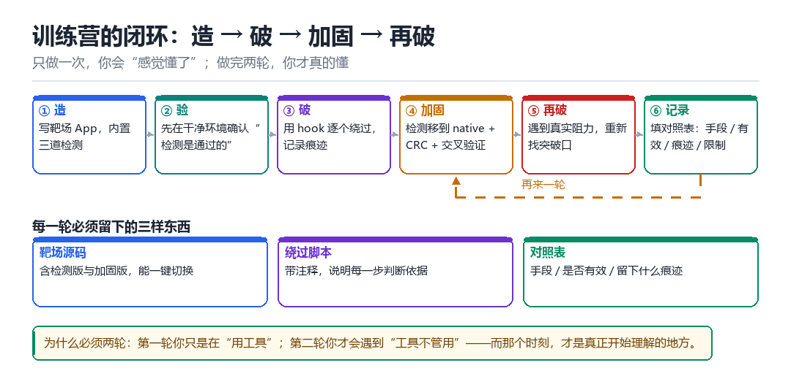

训练营一：给自写靶场 App 加一道检测，再绕过它
从“造”到“破”，一个完整闭环
很多人学了很久却做不出东西，原因很简单：从来没走完过一次完整闭环。

1.1 任务目标
写一个极简 App，内含三道检测：① 检测 root、② 检测调试器、③ 校验自身签名。三道全部通过才显示“OK”。然后你分别用三种手段把它们逐个绕过，并记录每一步的“观察 → 判断 → 动作”。
1.2 靶场 App 的三道检测
boolean checkRoot() {
String[] paths = {"/system/bin/su", "/system/xbin/su", "/sbin/su"};
for (String p : paths) if (new File(p).exists()) return false;
return true;
}
boolean checkDebug() {
return !Debug.isDebuggerConnected()
&& android.os.Debug.waitingForDebugger() == false;
}
boolean checkSign() {
// 读自身签名，与硬编码的 sha256 比对
return SHA256(getPackageManager()
.getPackageInfo(getPackageName(), GET_SIGNATURES)
.signatures[0].toByteArray()).equals(EXPECTED);
}1.3 第一阶段：先让它“正常失败”
在任何绕过之前，先确认检测是有效的。这一步 90% 的人会跳过，结果是后面所有“绕过成功”都不可信。
- 在已 root 的设备上跑，确认它报“失败”。
- 在没 root 的模拟器上跑，确认它报“成功”。
- 接上调试器，确认 checkDebug 变成 false。
- 改一下 APK 的签名（重打包），确认 checkSign 变成 false。
1.4 第二阶段：三种绕过手段
| 检测 | 绕过手段 | 留下的痕迹 |
|---|---|---|
| checkRoot | hook File.exists 返回 false | Java 层方法被替换 |
| checkDebug | hook Debug.isDebuggerConnected 返回 false | 同上 |
| checkSign | hook 签名读取，或直接改返回值 | 同上 / 签名被改 |
Java.perform(() => {
// 1) root：只拦 /su 结尾的路径，其余原样放行
const F = Java.use('java.io.File');
F.exists.implementation = function () {
const p = this.getAbsolutePath();
if (p.endsWith('/su')) { send('blocked ' + p); return false; }
return this.exists();
};
// 2) 调试：两个 API 都要盖，只盖一个会被另一个捞到
const D = Java.use('android.os.Debug');
D.isDebuggerConnected.implementation = function () { return false; };
D.waitingForDebugger.implementation = function () { return false; };
});第三道签名不急着改返回值：先按 T02 的办法把 signatures[0] 的 sha256 打出来，看清「期望值长什么样」，再决定是盖 PackageManager 还是盖最后那次 equals。上来就把 equals 改死，等于把一个可观测的锚点自己拆了。
1.5 第三阶段：反过来加固，再破一次
真正的学习发生在第二轮：你把检测改成“native 实现 + CRC 自校验 + 结果交叉验证”，然后再尝试绕过。这时你会亲身遇到“Java hook 不够用了”“CRC 报警了”这些真实阻力。
| 加固手段 | 它挡住了什么 | 它的新破绽 |
|---|---|---|
| 检测逻辑移到 native | Java hook 直接失效 | native hook / inline hook |
| 对检测函数做 CRC | 改代码会被发现 | 改校验函数本身 / 硬件断点 |
| 多处交叉验证 | 单点绕过无效 | 要同时绕过全部，成本上升 |
1.6 交付物
- 靶场 App 源码（含三道检测与加固版）。
- 绕过脚本（含注释，说明每一步的观察依据）。
- 一份对照表：加固前 / 加固后，各自的有效手段与痕迹。
- 一段 200 字总结：你现在能说清“为什么这一招在这里有效、换个场景就无效”。
1.7 自测
- 为什么必须先确认“检测在干净环境下是通过的”？
- 把检测移到 native 之后，Java hook 为什么失效？
- CRC 自校验本身怎么被绕过？
- 三道检测“交叉验证”之后，攻击者的成本上升在哪？
你坐在机器前，手里有一台刚刷完的 Pixel
你坐在机器前，手里有一台刚刷完的 Pixel、一份自己写的 HelloWorld 工程、一个还空着的终端窗口。屏幕上没有别人的 App，没有看不懂的混淆，只有你能完全控制的三百行代码。这是整个训练营里最奢侈的一次：因为你能确定每一个布尔值从哪来，所以后面每一次「绕过成功」都真的能归功于你的动作，而不是运气。先把 USB 线插稳，别急着写 hook——第一件事是把这份干净状态钉死。
桌上再放一张纸，画四列：环境、root 检测、调试检测、签名检测。你要在两种环境里各跑一遍，把三个布尔值抄进去；然后改签名重打包，再抄一遍。这张纸后面会变成你的交付物之一，也是唯一能证明「检测确实有效」的证据。三道检测的代码前面已经给过，这里不再重复，我们练的是把它当成一件真实产品来验收：先让它正常失败，再让它正常通过，最后才允许自己去破。
第一轮：先把干净状态钉死
- 你 → 对 HelloWorld 工程 → 用固定签名打出一个 baseline APK，立刻记下
sha256sum→ 结果是后面所有「我改了什么」都有唯一参照，不会出现「好像和上次不一样」。 - 你 → 对 已 root 的测试机 →
adb install -r baseline.apk后冷启动 → 结果是三个布尔值里至少 root 与签名两项为 false，UI 显示失败。 - 你 → 对 未 root 的模拟器 / 另一台干净机 → 装同一个 baseline APK 冷启动 → 结果是三项全 true，UI 显示 OK；这一步若也失败，先回去修检测，别往下走。
- 你 → 对 baseline APK → 用任意 debug key 重签名再装 → 结果是签名项为 false、另两项不变 → 说明三道检测彼此独立，没有被同一个条件串在一起。
- 你 → 对 调试器 → 用
adb shell am set-debug-app或直接 attach 一次 → 结果是调试项翻成 false → 至此你手里有了一张「什么算失败」的对照卡。
第二轮：动手破，逐拍记下依据
- 你 → 对 进程 → 用
frida -U -fspawn 而不是 attach → 结果是你能在 Application 初始化之前就把 hook 装好，避免检测先跑完再改。 - 你 → 对 `File.exists` → 只拦截路径以
/su结尾的调用、其余原样放行 → 结果是 root 项变 true，但别的正常文件访问没被破坏，UI 其他部分照常。 - 你 → 对 `Debug.isDebuggerConnected` 与 `waitingForDebugger` → 返回 false / false → 结果是调试项变 true，同时日志里能看见你的 send 打点，证明脚本真的执行了。
- 你 → 对 签名读取链路 → 先只打印
signatures[0]的 sha256 不改返回值 → 结果是你先看清「期望值长什么样」，再决定改哪一层，而不是一上来就把 equals 改死。 - 你 → 对 UI → 三项全 true 后截图存档 → 结果是第一轮闭环完成；但这只是开始，接下来要亲手把它变难。
可复现实验：一条命令走完 spawn 与回归
PKG=com.example.range
# 1. 固定基线，记哈希，别跳过
sha256sum app/build/outputs/apk/debug/app-debug.apk > /tmp/base.sha
adb install -r app/build/outputs/apk/debug/app-debug.apk
# 2. 冷启动一次，抓三个布尔值（先在 App 里用 Log.d 打出来）
adb shell am force-stop $PKG
adb logcat -c && adb logcat -v time -s RangeCheck:V > /tmp/clean.log &
adb shell monkey -p $PKG -c android.intent.category.LAUNCHER 1
# 3. spawn 注入，脚本里只改那三个事实，不改 UI 判断
frida -U -f $PKG -l bypass.js --no-pause > /tmp/bypass.log
# 4. 回归：把进程杀干净，不注入再跑一次，确认还是失败
adb shell am force-stop $PKG
adb shell monkey -p $PKG -c android.intent.category.LAUNCHER 1看到什么算成功：/tmp/clean.log 里三项为 false、UI 失败；/tmp/bypass.log 里出现你的 send('alive') 打点且三项翻成 true、UI 显示 OK；第 4 步杀掉进程后重新跑又变回失败。三段现象齐全，才算这一轮真的闭环了。看到什么算失败：bypass.log 里连 alive 都没有——那不是绕过没成功，是脚本根本没加载，回去查包名、-f 是否拼对、frida-server 是否与 host 版本一致；或者 UI 变 OK 但日志里三项仍有 false，说明你改的是显示层而不是检测依赖的事实，这种「成功」一分不值，必须推倒重来。
| 现象 | 最可能的原因 | 排查动作 |
|---|---|---|
| spawn 后没有任何 send | 脚本没加载 / 包名错 / 版本不匹配 | 先加 send('alive')，核对 frida-ps -U |
| 三项全 true 但 UI 仍失败 | 只改了显示层，没改事实 | 在检测函数返回处打点，看谁还在拦 |
| 干净机也报失败 | 检测自身有 bug | 先修检测，禁止在此状态下谈绕过 |
| 绕过一次有效、二次无效 | JIT 内联或结果被交叉校验 | 打印调用栈，确认是否走了另一份逻辑 |
| 重签名后 root 项也变了 | 三道检测被写进同一个条件 | 拆开成独立函数，各自返回结果 |
交付物清单（缺一项就不算完成）
- 靶场源码：baseline 版与加固版各一份，两版都能编译、都能冷启动，附上各自的签名哈希。
- 环境对照卡：干净机 / root 机 / 重签名 / 接调试器四种情况下三个布尔值的原始记录，含 logcat 原文片段。
- 绕过脚本：带注释，每一处 hook 旁写明「观察到什么 → 所以改这里」，脚本首行必须有
send('alive')。 - 加固前后对照表：列出加固前有效的手段、加固后失效的手段、以及每一招留下的痕迹（Java 方法被替换 / native 入口被改 / CRC 报警）。
- 回归记录：第 4 步杀进程后重新跑的结果截图，证明确认过「不注入就失败」。
- 一段 200 字总结：只回答一个问题——为什么这一招在这里有效、换个场景就无效。
把这六样东西归档好，T02 会换掉你手里那样东西：从「自己写的源码」变成「一个陌生 APK」。那时你不再有源码可依，只能靠这里练出来的「先看事实、再改事实」的习惯。再往后 T03 会把这张对照卡升级成一张必须填满数字的三组记录表——闭环还是那个闭环，只是证据从布尔值变成了可度量的指标。